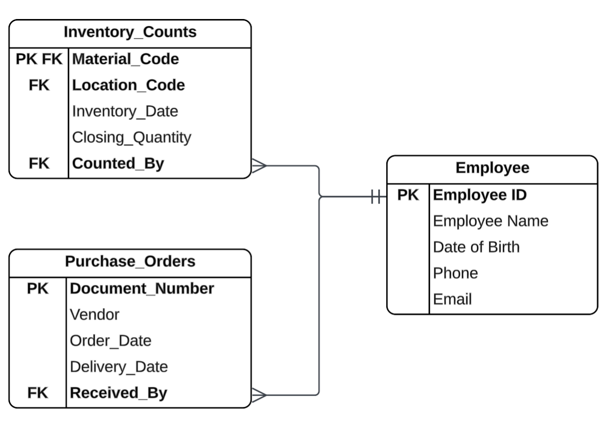

Muesli - ERD & SQL 1¶
1. ERD Understanding and Operational Analysis¶
Muesli Pty Ltd is a medium-sized company that manufactures and sells breakfast cereals to retailers.
Refer to the ERD provided in the company's background section to answer the following 3 sub-questions.
(1) Assertions about the ERD¶
Q:
For each of the assertions below, critically discuss to what extent the database structure would imply that the assertion is true or false.
Explain with reference to specific parts of the ERD to support your answers.
(a) Customers pay entire invoices at once. There are no split or partial payments.
(b) Production output is recorded only once, at the end of the production run.
A:
(a) Yes, the database structure supports this assertion.
First, the Sales Invoices entity contains only a single Payment Date attribute. Since there is only one field to record a payment date, the structure can only capture one payment event per invoice — it is impossible to record two separate payment dates against the same invoice.
Second, there is no Paid_Amount field or equivalent in the Sales Invoices entity. Without such a field, the system has no way to track how much has been paid so far or how much remains outstanding. This means partial payments cannot be meaningfully recorded or tracked, further supporting the assertion that customers must pay the entire invoice at once.
(b) No, the database structure does not support this assertion.
First, the relationship between Production Orders and Production Yields is one-to-many (1:N), meaning a single production order can be associated with multiple yield records. This alone shows that production output can be recorded more than once per production run.
Second, the Production Yields entity has a composite primary key consisting of both Document Number (FK to Production Orders) and Yield Date. Because Yield Date is part of the composite PK, the system allows one yield record to be entered per day for each production order. This means that for a multi-day production run, output can be recorded progressively each day — not only once at the end.
Therefore, the assertion is false.
(2) Split Pricing Scenario¶
Q:
The edible foodstuffs vendor is offering the company fixed-volume pricing.
For example:
- If we order in multiples of 10,000 kg, the price would be $4 per kg.
- If we order less than 10,000 kg, the price would be $4.20 per kg.
- However, if we order 24,320 kg, then the first 20,000 kg would cost $4 per kg, and the remaining 4,320 kg would cost $4.20 per kg.
Under this new split pricing scenario, can the existing database structure record these variations in quantity and pricing, or would modifications to the schema be required for the company to take advantage of this? Explain why or why not.
A:
The current database structure CAN record the variations in quantity and pricing under the new split pricing scenario, without requiring modifications to the schema. Since the Purchase_Order_Items entity has a composite PK of Document_Number and Item_Number, but Material_Code is not part of any PK or alternate key, it places no uniqueness constraint on Material Code — the same material can appear on multiple lines within the same purchase order.
Item_Number itself is not a FK (it does not reference any other entity), so it functions as a surrogate key whose sole purpose is to make each line of Purchase_Order_Items unique, allowing as many lines as needed for the same material.
For example, if we order 24,320 kg of a particular raw material, this can be recorded as two separate lines within the same purchase order:
| Document Number | Item Number | Material Code | Price | Order_Quantity | Receive_Quantity | Unit |
|---|---|---|---|---|---|---|
| 0000001 | 1 | BB-R02 | $4.00 | 20,000 | 20,000 | kg |
| 0000001 | 2 | BB-R02 | $4.20 | 4,320 | 4,320 | kg |
Therefore, no schema modifications are required.
(3) Employee Tracking¶
Q:
Some inventory recently went missing from the warehouse. The supplier confirms that it was sent and the shipping company confirms it was delivered. Both provided documented evidence supporting these facts.
The system shows the inventory as having been delivered, but warehouse counts have not reflected this inventory being in stock.
In order to increase accountability, the company wants to add an Employee entity and associated relationships to track who received deliveries from suppliers, and also who enters warehouse counts.
Assuming an Employee entity has already been created with PK "Employee ID" and other relevant information about employees, describe how to correctly add relationships with the other existing entities to achieve the desired accountability.
Drawing a new ERD (or part of the ERD) is optional. You will be scored primarily on your explanation - your new ERD is only there to support your explanation.
A:
The parts of new ERD:

First, in Inventory_Counts entity, we can add a new required FK Counted_By that references the PK of the Employee entity - Employee_ID. This would make a required one-to-many relationship between Employee and Inventory_Counts, which would allow us to track which employee is responsible for each inventory count. The Inventory_Counts entity clearly lables the material, quantity, and date of the inventory count. So, when employees sign their name to the inventory count, they are confirming that they have verified the material, quantity, and date of the inventory count, which would enhance accountability.
Second, in the Purchase_Orders entity, we add a new optional FK Received_By that references the PK of the Employee entity - Employee_ID. It must be optional because when a purchase order is first created, the delivery has not yet occurred and it is not yet known which employee will receive the goods. The field would be updated with the responsible employee's ID once the delivery arrives at the warehouse.
2. SQL Querying¶
Using the database, develop and test ONE SQL query for each of the following business intents to support Muesli Pty Ltd. The information retrieved when running each SQL, should be easily usable to inform the stated intent (i.e., minimal additional sorting or calculations would be required to determine an answer).
Use SQL comments before or within your query to:
- Document any assumptions
- Cite any part of the code obtained from a 3rd party source
(1) Purchasing Costs¶
Q:
Weighted average purchase cost of each raw material
- Only include purchases made in the prior 13 weeks (a rolling quarter), excluding the current week.
- Per kg for edible food items.
- Per piece for packaging boxes and bags.
A:
WITH
Purchases_Quarter AS (
SELECT
POI.Material_Code,
SUM(POI.Receive_Quantity) AS Total_Quantity,
SUM(POI.Receive_Quantity * POI.Price) / SUM(POI.Receive_Quantity) AS Weighted_Average_Cost
FROM Purchase_Order_Items AS POI
JOIN Purchase_Orders AS PO ON POI.Document_Number = PO.Document_Number
WHERE PO.Delivery_Date >= DATEADD(WEEK, -13, DATETRUNC(WEEK, CURRENT_TIMESTAMP))
AND PO.Delivery_Date < DATETRUNC(WEEK, CURRENT_TIMESTAMP)
GROUP BY POI.Material_Code
)
SELECT
M.Material_Code,
M.Material_Name,
M.Unit_Size,
COALESCE(PQ.Total_Quantity, 0) AS Total_Quantity,
PQ.Weighted_Average_Cost
FROM Materials AS M
LEFT JOIN Purchases_Quarter AS PQ ON M.Material_Code = PQ.Material_Code
WHERE M.Type_Code = 'ROH'
ORDER BY M.Material_Code
;
Note: This query is executed on 2026-04-01. If you run this query on a different date, the results may vary, because the database is continuously updated.
==================================================================================
Material_Code Material_Name Unit_Size Total_Quantity Weighted_Average_Cost
------------- ---------------- ---------- -------------- ---------------------
BB-P01 Large Box (1kg) 1 piece 594000.000 0.340000
BB-P02 Large Bag (1kg) 1 piece 594000.000 0.160000
BB-P03 Small Box (500g) 1 piece 674000.000 0.260000
BB-P04 Small Bag (500g) 1 piece 674000.000 0.140000
BB-R01 Nuts 1 kg 62450.000 1.850112
BB-R02 Blueberries 1 kg 55400.000 5.453772
BB-R03 Strawberries 1 kg 68300.000 5.057467
BB-R04 Raisins 1 kg 82400.000 1.424199
BB-R05 Wheat 1 kg 331220.000 0.939961
BB-R06 Oats 1 kg 331220.000 1.060864
(10 rows affected)
(2) Expenditures¶
Q:
Year-to-date and month-to-date expenditure for each expense category.
A:
WITH
Account_Categories AS (
SELECT
Account_Number,
Account_Name,
CASE
WHEN Account_Number IN ('0000211120', '0000211130') THEN 'Depreciation'
WHEN Account_Number IN ('0000400000', '0000500000', '0000510000') THEN 'Manufacturing'
WHEN Account_Number IN ('0000472000', '0000478100') THEN 'Logistics'
WHEN Account_Number = '0000476900' THEN 'Financing'
WHEN Account_Number BETWEEN '0000477001' AND '0000477036' OR Account_Number = '0000520000' THEN 'Sales and Administration'
WHEN Account_Number = '0000478000' THEN 'Consulting'
ELSE 'Other'
END AS Account_Category
FROM GL_Accounts
WHERE Account_Group = 'IS-Expenses'
),
Account_Expenditure AS (
SELECT
GLA.Account_Number,
GLP.Posting_Date,
CASE
WHEN GLPE.DR_or_CR = 'DR' THEN GLPE.Amount
ELSE -GLPE.Amount
END AS Amount
FROM GL_Accounts AS GLA
JOIN GL_Posting_Entries AS GLPE ON GLA.Account_Number = GLPE.Account_Number
JOIN GL_Postings AS GLP ON GLPE.Document_Number = GLP.Document_Number
WHERE GLA.Account_Group = 'IS-Expenses'
)
SELECT
AC.Account_Category,
COALESCE(SUM(CASE WHEN AE.Posting_Date >= DATETRUNC(YEAR, CURRENT_TIMESTAMP) THEN AE.Amount ELSE 0 END), 0) AS Year_to_Date,
COALESCE(SUM(CASE WHEN AE.Posting_Date >= DATETRUNC(MONTH, CURRENT_TIMESTAMP) THEN AE.Amount ELSE 0 END), 0) AS Month_to_Date
FROM Account_Categories AS AC
LEFT JOIN Account_Expenditure AS AE ON AC.Account_Number = AE.Account_Number
GROUP BY AC.Account_Category
ORDER BY AC.Account_Category
Note: This query is executed on 2026-04-01. If you run this query on a different date, the results may vary, because the database is continuously updated.
=====================================================
Account_Category Year_to_Date Month_to_Date
------------------------ ------------ -------------
Consulting 0.00 0.00
Depreciation 966249.97 228333.32
Financing 114756.80 17885.95
Logistics 150000.00 35000.00
Manufacturing 3525794.49 724023.64
Sales and Administration 680000.00 160000.00
(6 rows affected)
(3) Current Inventory¶
Q:
Currently available inventory for each product.
A:
WITH
Latest_Dates AS (
SELECT
Location_Code,
MAX(Inventory_Date) AS Latest_Date
FROM Inventory_Counts
GROUP BY Location_Code
)
SELECT
M.Material_Code,
M.Material_Name,
SUM(IC.Closing_Quantity) AS Available_Inventory
FROM Materials AS M
JOIN Inventory_Counts AS IC ON M.Material_Code = IC.Material_Code
JOIN Latest_Dates AS LD ON IC.Location_Code = LD.Location_Code
WHERE IC.Inventory_Date = LD.Latest_Date
AND M.Type_Code = 'FERT'
GROUP BY M.Material_Code, M.Material_Name
ORDER BY M.Material_Code
;
Note: This query is executed on 2026-04-01. If you run this query on a different date, the results may vary, because the database is continuously updated.
===========================================================
Material_Code Material_Name Available_Inventory
------------- ----------------------- -------------------
BB-F01 500g Nut Muesli 3734.000
BB-F02 500g Blueberry Muesli 23773.000
BB-F03 500g Strawberry Muesli 0.000
BB-F04 500g Raisin Muesli 0.000
BB-F05 500g Original Muesli 42085.000
BB-F06 500g Mixed Fruit Muesli 0.000
BB-F11 1kg Nut Muesli 0.000
BB-F12 1kg Blueberry Muesli 0.000
BB-F13 1kg Strawberry Muesli 26662.000
BB-F14 1kg Raisin Muesli 717.000
BB-F15 1kg Original Muesli 0.000
BB-F16 1kg Mixed Fruit Muesli 28893.000
(12 rows affected)
(4) Weekly Sales¶
Q:
Revenue and Units sold for each product, for each week:
- Show the most recent weeks first
- Show whole weeks only, i.e., exclude the current week
- Identify each week with a date (e.g., the first day in the week), NOT a week number (1, 2, 3, ..., 52)
A:
WITH
Sales_Data AS (
SELECT
DATETRUNC(WEEK, Delivery_Date) AS Week_Start_Date,
M.Material_Code,
M.Material_Name,
SOI.Quantity,
SOI.Price
FROM Materials AS M
JOIN Sales_Order_Items AS SOI ON M.Material_Code = SOI.Material_Code
JOIN Sales_Orders AS SO ON SOI.Document_Number = SO.Document_Number
)
SELECT
Week_Start_Date,
Material_Code,
Material_Name,
SUM(Quantity) AS Units_Sold,
SUM(Quantity * Price) AS Revenue
FROM Sales_Data
WHERE Week_Start_Date < DATETRUNC(WEEK, '2026-04-01') -- Exclude current week
GROUP BY Week_Start_Date, Material_Code, Material_Name
ORDER BY Week_Start_Date DESC, Units_Sold DESC
Note: This query is executed on 2026-04-01. If you run this query on a different date, the results may vary, because the database is continuously updated.
=================================================================================
Week_Start_Date Material_Code Material_Name Units_Sold Revenue
--------------- ------------- ---------------------- ---------- -------------
2026-03-22 BB-F02 500g Blueberry Muesli 28308.000 153146.280000
2026-03-22 BB-F16 1kg Mixed Fruit Muesli 22858.000 130519.180000
2026-03-22 BB-F14 1kg Raisin Muesli 18393.000 83320.290000
2026-03-22 BB-F01 500g Nut Muesli 16214.000 55614.020000
2026-03-22 BB-F05 500g Original Muesli 14643.000 38950.380000
2026-03-22 BB-F13 1kg Strawberry Muesli 8783.000 61568.830000
2026-03-15 BB-F16 1kg Mixed Fruit Muesli 25415.000 150202.650000
2026-03-15 BB-F14 1kg Raisin Muesli 23292.000 114829.560000
2026-03-15 BB-F01 500g Nut Muesli 16760.000 62682.400000
2026-03-15 BB-F05 500g Original Muesli 15783.000 42614.100000
2026-03-15 BB-F02 500g Blueberry Muesli 12477.000 69247.350000
2026-03-15 BB-F13 1kg Strawberry Muesli 12418.000 86429.280000
2026-03-08 BB-F05 500g Original Muesli 33217.000 89685.900000
2026-03-08 BB-F01 500g Nut Muesli 32122.000 120136.280000
2026-03-08 BB-F16 1kg Mixed Fruit Muesli 14094.000 83295.540000
2026-03-08 BB-F02 500g Blueberry Muesli 13447.000 74630.850000
2026-03-08 BB-F13 1kg Strawberry Muesli 6561.000 45664.560000
2026-03-08 BB-F14 1kg Raisin Muesli 716.000 3529.880000
2026-03-01 BB-F16 1kg Mixed Fruit Muesli 35006.000 206535.400000
2026-03-01 BB-F05 500g Original Muesli 25612.000 69408.520000
2026-03-01 BB-F01 500g Nut Muesli 23710.000 91994.800000
2026-03-01 BB-F13 1kg Strawberry Muesli 13300.000 90839.000000
2026-03-01 BB-F02 500g Blueberry Muesli 10457.000 59395.760000
2026-03-01 BB-F14 1kg Raisin Muesli 2207.000 11012.930000
... ... ... ... ...
2025-07-13 BB-F13 1kg Strawberry Muesli 25500.000 122400.000000
2025-07-13 BB-F02 500g Blueberry Muesli 25500.000 117045.000000
2025-07-13 BB-F01 500g Nut Muesli 23850.000 88245.000000
2025-07-13 BB-F05 500g Original Muesli 8500.000 35360.000000
2025-07-06 BB-F01 500g Nut Muesli 16970.000 84850.000000
2025-07-06 BB-F02 500g Blueberry Muesli 13242.000 57867.540000
2025-06-29 BB-F01 500g Nut Muesli 8500.000 42500.000000
(210 rows affected)
(5) Planned Future Production¶
Q:
The remaining, yet to be produced, production schedule.
A:
WITH
Production_Remaining AS (
SELECT
PO.Document_Number,
M.Material_Code,
M.Material_Name,
PO.Scheduled_Start,
PO.Scheduled_End,
PO.Planned_Quantity,
PO.Planned_Quantity - COALESCE(SUM(PY.Yield), 0) AS Remaining_Quantity
FROM Production_Orders AS PO
JOIN Materials AS M ON PO.Material_Code = M.Material_Code
LEFT JOIN Production_Yields AS PY ON PO.Document_Number = PY.Document_Number
GROUP BY PO.Document_Number, M.Material_Code, M.Material_Name, PO.Scheduled_Start, PO.Scheduled_End, PO.Planned_Quantity
)
SELECT
*,
Planned_Quantity - Remaining_Quantity AS Produced_Quantity
FROM Production_Remaining
WHERE Remaining_Quantity > 0
ORDER BY Scheduled_Start
Note: This query is executed on 2026-04-24. If you run this query on a different date, the results may vary, because the database is continuously updated.
=================================================================================================================================================
Document_Number Material_Code Material_Name Scheduled_Start Scheduled_End Planned_Quantity Remaining_Quantity Produced_Quantity
--------------- ------------- ---------------------- --------------- ------------- ---------------- ------------------ -----------------
000001001097 BB-F01 500g Nut Muesli 2026-04-24 2026-04-28 34000.000 33719.000 281.000
000001001105 BB-F05 500g Original Muesli 2026-04-28 2026-04-29 18000.000 18000.000 0.000
000001001104 BB-F05 500g Original Muesli 2026-04-29 2026-05-01 54000.000 54000.000 0.000
000001001102 BB-F02 500g Blueberry Muesli 2026-05-01 2026-05-04 23000.000 23000.000 0.000
000001001106 BB-F13 1kg Strawberry Muesli 2026-05-04 2026-05-05 18000.000 18000.000 0.000
000001001111 BB-F16 1kg Mixed Fruit Muesli 2026-05-05 2026-05-07 46000.000 46000.000 0.000
000001001108 BB-F14 1kg Raisin Muesli 2026-05-07 2026-05-11 46000.000 46000.000 0.000
(7 rows affected)
(6) Undelivered Raw Materials¶
Q:
Relevant details about currently undelivered raw materials, including the number of days it's been since the items were ordered.
A:
SELECT
PO.Document_Number,
PO.Vendor,
M.Material_Code,
M.Material_Name,
PO.Order_Date,
PO.Delivery_Date,
POI.Order_Quantity,
POI.Receive_Quantity,
DATEDIFF(DAY, PO.Order_Date, CURRENT_TIMESTAMP) AS Days_Since_Ordered
FROM Purchase_Orders AS PO
JOIN Purchase_Order_Items AS POI ON PO.Document_Number = POI.Document_Number
JOIN Materials AS M ON POI.Material_Code = M.Material_Code
WHERE M.Type_Code = 'ROH'
AND (POI.Receive_Quantity IS NULL OR POI.Receive_Quantity < POI.Order_Quantity)
ORDER BY PO.Order_Date
Note: This query is executed on 2026-04-01. If you run this query on a different date, the results may vary, because the database is continuously updated.
==================================================================================================================================================
Document_Number Vendor Material_Code Material_Name Order_Date Delivery_Date Order_Quantity Receive_Quantity Days_Since_Ordered
--------------- ---------- ------------- ------------- ---------- ------------- -------------- ---------------- ------------------
(0 rows affected)
(7) Balance Sheet Balances as of a Certain Date¶
Q:
The balance of each account as of close of business December 31st, for all balance sheet accounts (include the date of the last recorded transaction prior to, or on, December 31 st for each account).
A:
WITH
BS_Journals AS (
SELECT
GLA.Account_Number,
GLA.Account_Name,
GLA.Account_Group,
GLP.Posting_Date,
CASE
WHEN GLA.Account_Group = 'BS-Assets' AND LOWER(GLA.Account_Name) NOT LIKE '%accumulated depreciation%'
THEN
CASE
WHEN GLPE.DR_or_CR = 'DR' THEN GLPE.Amount
WHEN GLPE.DR_or_CR = 'CR' THEN -GLPE.Amount
END
ELSE
CASE
WHEN GLPE.DR_or_CR = 'DR' THEN -GLPE.Amount
WHEN GLPE.DR_or_CR = 'CR' THEN GLPE.Amount
END
END AS Signed_Amount
FROM GL_Accounts AS GLA
JOIN GL_Posting_Entries AS GLPE ON GLA.Account_Number = GLPE.Account_Number
JOIN GL_Postings AS GLP ON GLPE.Document_Number = GLP.Document_Number
WHERE GLA.Account_Group LIKE 'BS-%'
)
SELECT
GLA.Account_Number,
GLA.Account_Name,
GLA.Account_Group,
COALESCE(SUM(BJ.Signed_Amount), 0) AS Account_Balance,
MAX(BJ.Posting_Date) AS Last_Transaction_Date
FROM GL_Accounts AS GLA
LEFT JOIN BS_Journals AS BJ ON GLA.Account_Number = BJ.Account_Number AND BJ.Posting_Date <= '2025-12-31'
WHERE GLA.Account_Group LIKE 'BS-%'
GROUP BY GLA.Account_Number, GLA.Account_Name, GLA.Account_Group
ORDER BY GLA.Account_Group, GLA.Account_Number
==========================================================================================================================
Account_Number Account_Name Account_Group Account_Balance Last_Transaction_Date
-------------- -------------------------------------------------- -------------- --------------- ---------------------
0000001000 Land BS-Assets 500000.00 2025-06-30
0000002000 Buildings BS-Assets 1500000.00 2025-06-30
0000002010 Accumulated Depreciation - Buildings BS-Assets 32500.00 2025-12-26
0000011000 Machinery and equipment BS-Assets 26200000.00 2025-12-15
0000011010 Accumulated depreciation - machinery and equipment BS-Assets 1366666.62 2025-12-26
0000113300 Bank Cash Account BS-Assets 777078.93 2025-12-31
0000140000 Customers - Domestic Receivables BS-Assets 1234644.93 2025-12-31
0000300000 Raw materials BS-Assets 492414.22 2025-12-31
0000792000 Finished goods BS-Assets 226240.18 2025-12-31
0000070000 Common stock BS-Equity 20000000.00 2025-06-30
0000113101 Bank Loan BS-Liabilities 5786528.09 2025-12-15
0000160000 Accounts payable - Domestic BS-Liabilities 850241.50 2025-12-30
0000191100 GR/IR Clearing - External procurement BS-Misc 0.00 2025-12-30
((13 rows affected))
3. Analysis¶
Use the information obtained from running your queries from Question 2, to answer the following questions.
Make explicit reference to specific values retrieved from the data to support each answer.
You may optionally include screenshots of the output from one or more queries if you feel that's easier; however a screenshot of the whole output without making reference to which of the specific values are relevant (which column and row), is not an answer.
DO NOT write any new queries, or alter your queries from Question 2.
If you cannot support an answer based on the output from your Question 2 queries, your Question 2 queries probably aren't as useful as you thought - go improve them!
(1) Popular products¶
Q:
Which product(s) seem to be the most popular?
A:
Looking at units sold over the most recent 4 weeks, 1kg Mixed Fruit Muesli appears to be the most consistently popular product, ranking in the top 3 in all 4 weeks. 500g Nut Muesli also shows strong consistent performance, appearing in the top 3 in 3 out of 4 weeks (ranking 4th in the week of 2026-03-22).
In contrast, other products such as 500g Blueberry Muesli and 1kg Raisin Muesli show more volatile performance — ranking 1st one week but dropping significantly in others — suggesting their sales may be more dependent on available stock rather than underlying demand.
Note: this analysis is based on query results as of 2026-04-01 and may vary if run on a different date.
=================================================================================
Week_Start_Date Material_Code Material_Name Units_Sold Revenue
--------------- ------------- ---------------------- ---------- -------------
2026-03-22 BB-F02 500g Blueberry Muesli 28308.000 153146.280000
2026-03-22 BB-F16 1kg Mixed Fruit Muesli 22858.000 130519.180000
2026-03-22 BB-F14 1kg Raisin Muesli 18393.000 83320.290000
2026-03-22 BB-F01 500g Nut Muesli 16214.000 55614.020000
2026-03-22 BB-F05 500g Original Muesli 14643.000 38950.380000
2026-03-22 BB-F13 1kg Strawberry Muesli 8783.000 61568.830000
2026-03-15 BB-F16 1kg Mixed Fruit Muesli 25415.000 150202.650000
2026-03-15 BB-F14 1kg Raisin Muesli 23292.000 114829.560000
2026-03-15 BB-F01 500g Nut Muesli 16760.000 62682.400000
2026-03-15 BB-F05 500g Original Muesli 15783.000 42614.100000
2026-03-15 BB-F02 500g Blueberry Muesli 12477.000 69247.350000
2026-03-15 BB-F13 1kg Strawberry Muesli 12418.000 86429.280000
2026-03-08 BB-F05 500g Original Muesli 33217.000 89685.900000
2026-03-08 BB-F01 500g Nut Muesli 32122.000 120136.280000
2026-03-08 BB-F16 1kg Mixed Fruit Muesli 14094.000 83295.540000
2026-03-08 BB-F02 500g Blueberry Muesli 13447.000 74630.850000
2026-03-08 BB-F13 1kg Strawberry Muesli 6561.000 45664.560000
2026-03-08 BB-F14 1kg Raisin Muesli 716.000 3529.880000
2026-03-01 BB-F16 1kg Mixed Fruit Muesli 35006.000 206535.400000
2026-03-01 BB-F05 500g Original Muesli 25612.000 69408.520000
2026-03-01 BB-F01 500g Nut Muesli 23710.000 91994.800000
2026-03-01 BB-F13 1kg Strawberry Muesli 13300.000 90839.000000
2026-03-01 BB-F02 500g Blueberry Muesli 10457.000 59395.760000
2026-03-01 BB-F14 1kg Raisin Muesli 2207.000 11012.930000
(2) Inventory Planning¶
Q:
Which product(s) are likely to have enough stock in inventory to support a week of sales, at the start of next week (April 6)?
A:
Combining the outputs from Question 2 (3) Current Inventory and Question 2 (4) Weekly Sales, we can see that the currently available inventory and the units sold of most recent week for each product are as follows:
===========================================================
Material_Code Material_Name Available_Inventory
------------- ----------------------- -------------------
BB-F01 500g Nut Muesli 3734.000
BB-F02 500g Blueberry Muesli 23773.000
BB-F03 500g Strawberry Muesli 0.000
BB-F04 500g Raisin Muesli 0.000
BB-F05 500g Original Muesli 42085.000
BB-F06 500g Mixed Fruit Muesli 0.000
BB-F11 1kg Nut Muesli 0.000
BB-F12 1kg Blueberry Muesli 0.000
BB-F13 1kg Strawberry Muesli 26662.000
BB-F14 1kg Raisin Muesli 717.000
BB-F15 1kg Original Muesli 0.000
BB-F16 1kg Mixed Fruit Muesli 28893.000
=================================================================================
Week_Start_Date Material_Code Material_Name Units_Sold Revenue
--------------- ------------- ---------------------- ---------- -------------
2026-03-22 BB-F02 500g Blueberry Muesli 28308.000 153146.280000
2026-03-22 BB-F16 1kg Mixed Fruit Muesli 22858.000 130519.180000
2026-03-22 BB-F14 1kg Raisin Muesli 18393.000 83320.290000
2026-03-22 BB-F01 500g Nut Muesli 16214.000 55614.020000
2026-03-22 BB-F05 500g Original Muesli 14643.000 38950.380000
2026-03-22 BB-F13 1kg Strawberry Muesli 8783.000 61568.830000
Therefore, using the units sold of the most recent week as a proxy for the demand for each product, we can calculate the inventory coverage for each product by dividing the currently available inventory by the units sold of the most recent week:
| Material_Name | Available_Inventory | Units_Sold_Per_Week | Inventory Coverage (weeks) |
|---|---|---|---|
| 500g Original Muesli | 9358.000 | 14643.000 | 0.64 |
| 500g Nut Muesli | 46016.000 | 16214.000 | 2.84 |
| 500g Blueberry Muesli | 25345.000 | 28308.000 | 0.90 |
| 1kg Strawberry Muesli | 35618.000 | 8783.000 | 4.06 |
| 1kg Raisin Muesli | 3036.000 | 18393.000 | 0.17 |
| 1kg Mixed Fruit Muesli | 14806.000 | 22858.000 | 0.65 |
Based on the inventory coverage calculated above, we can see that, the 500g Nut Muesli and 1kg Strawberry Muesli are likely to have enough stock in inventory to support a week of sales at the start of next week (April 6), as their inventory coverage is greater than 1 week. However, the 500g Original Muesli, 500g Blueberry Muesli, 1kg Raisin Muesli, and 1kg Mixed Fruit Muesli are likely to not have enough stock in inventory to support a week of sales at the start of next week (April 6), as their inventory coverage is less than 1 week.
Note, this result is based on query execution results as of 2026-04-01. If you run the same query on a different date, the results may vary, because the database is continuously updated.